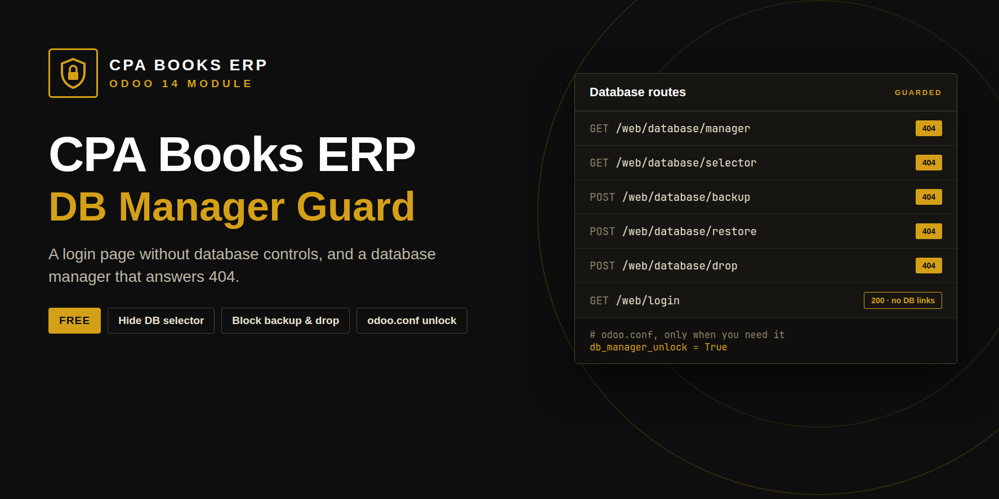
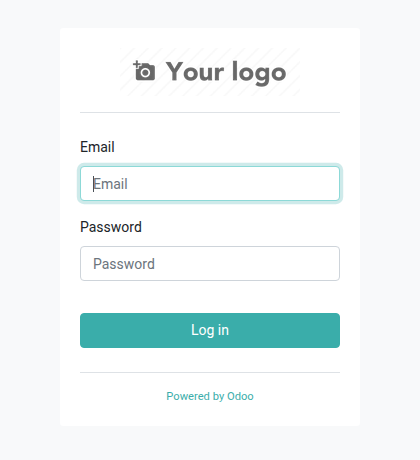

A login page without database controls, and a database manager that answers 404. Backup, restore, duplicate and drop are refused until you unlock them in odoo.conf.

| On the login page | Standard Odoo | With DB Manager Guard |
|---|---|---|
| Manage Databases link | Shown to every visitor | Removed |
| Select database button | Lists your database names | Removed |
| Typing the manager URL | Opens backup, restore and drop forms | 404 Not Found |
| Guessing the master password | The only protection | The forms are not reachable at all |
| GET | /web/database/manager | 404 |
| GET | /web/database/selector | 404 |
| POST | /web/database/backup | 404 |
| POST | /web/database/restore | 404 |
| POST | /web/database/duplicate | 404 |
| POST | /web/database/drop | 404 |
| POST | /web/database/create | 404 |
| POST | /web/database/change_password | 404 |
Each refused call is written to the Odoo log at INFO level.

Nobody can switch the manager on from a browser. Only someone with access to the Odoo configuration file can.
| Module | db_manager_guard |
| Odoo | 14.0 Community and Enterprise |
| Depends on | web |
| Unlock option | db_manager_unlock |
| License | OPL-1 · CPA Books ERP |
Servers where each domain opens one database through dbfilter, the usual production setup. If your server lists many databases with no filter, also set list_db = False.
No. Email, password, reset password and sign-up work as before.
With your server backups (pg_dump), or unlock the manager for a short time.
Yes. Help with server setup is available from the CPA Books ERP team.
Available for Odoo 14 now. Need DB Manager Guard on another version? We upgrade it for you.
Questions or help with your server setup? The CPA Books ERP team replies on WhatsApp and email.